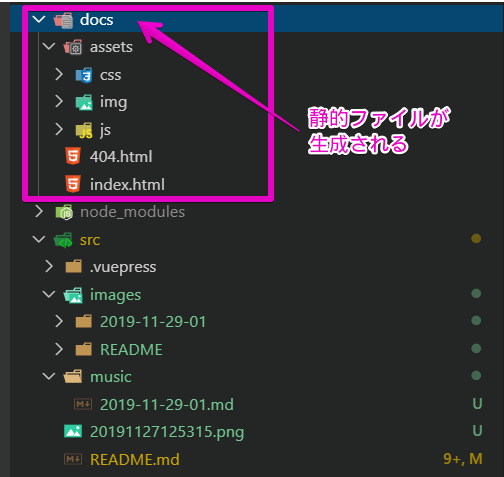

# 2020年に向けて自分用ドキュメントツールを見直してみた[Visual Studio Code][VuePress][GitHub Pages][CircleCI]
特に理由は無いですが2020年も近いことですし自分用ドキュメントツールを見直してみようかと思います。
本稿では、ドキュメントツールを見直した際に行った作業を記録しておきます。
# 前置き
自分用のメモとして、技術的なことを調査した内容や検証してみた結果を、ドキュメントツールで記録をしていました。「前にアレやったことあったけどどうだったかな～」といった際に見直すことができたり、記録をする行為を経て「ああ、自分この辺わかってないなー」と気付けるきっかけにもなったりとメリットを感じていました。
# これまで使っていたドキュメントツール
2009年～2016年まで：pukiwiki
PHPで動作するウィキクローンの一つ。自宅のノートPCをサーバーにして立ち上げてました。引越しを機に廃止。
2016年～2019年（現在）：Crowi-Plus
Markdownで書けるWiki。pukiwikiとは違ったWikiサービス＆Markdownに慣れたかったので採用(pukiwikiでも頑張ればMarkdownで書けそうだけど）。自宅オンプレだと電源を入れっぱなしにする必要があるなど色々と面倒だったので、AzureにVMを立てて管理していました。現在もこれで運用中。

# どんなドキュメントツールを使いたいか
- Markdownで書きたい
- リアルタイムでプレビューしたい
- 画像を貼りたい
- クラウドにのせる
- クラウドサービスを使うのにお金をかけたくない
- Azureは無償の範囲内で使えて入るが、その恩恵が受けられなくなる可能性もあるので事前に対策しておきたい気持ちもあった。
- GCPの無料枠も悪くはないと思ったが今回はパス
- GitHub Pagesに公開したい
- ドキュメントは最終的にはGitHub Pagesに公開したい（GitHubのCommit色をつけたい欲求も満たされる）
- ツールは今っぽいサービスを使いたい
- GitBook v1（オンプレ向け）はメンテされていないなのでNG
- GitBook v2 はホスティングのみなのでNG
- docsifyも魅力的ではあるが、メンテされていない可能性あり？
- MkDocs python基盤のMarkdownで書けるドキュメントツール。これも候補だった
- VuePress
- 去年あたりから流行っていそう？面白そうなので使ってみたい
ってことでVuePressを使ってみることにしました。
# VuePressとは
VuePressは、Vue.jsの作者Evan You氏が作成した静的サイトジェネレータです。
Markdownで書かれたファイルを元にHTMLを生成することができるのが特徴です。
他にも、Markdown内でVueが使用できたり、Vueを利用してカスタムテーマの開発が可能だったりするそうです。
# 環境を準備する
ということで、VuePressを使ったドキュメント管理をするための環境を作ります。
利用OSやソフトウェアは以下を使用しています。
- OS: Windows 10
- Visual Studio Code: v1.40.2
- Node.js： v10.16.3
- npm： v6.9.0
- VuePress： 1.2.0
# Visual Studio Code をインストールする
ドキュメントのエディタとして、Visual Studio Codeを使用します。 公式サイトよりダウンロードしインストールします。
Visual Studio Codeのインストールが完了したら、Markdownを便利に編集するために、以下のExtensionをインストールします。
- Markdown All in One
- markdownlint
- Paste Image
- ※Markdownとは直接関係ないが、以下のExtensionもついでにインストールしておく
- Japanese Language Pack for Visual Studio Code
- vscode-icons
# Node.js をインストールする
VuePressを使うにはNode.jsが必要なためインストールします。 公式サイトよりダウンロードしてインストールします。
インストールが終わったらコマンドを叩いて確認します。（npmも一緒に入るはず）
$ node --version
v10.16.3
$ npm --version
6.9.0
# VuePress をインストールする
npmを使ってインストールします。
$ mkdir mywiki
$ cd mywiki
$ npm init -y
$ npm i -D vuepress
しばらくするとインストールが完了します。コマンドを叩いてインストールされたことを確認しまします。
$ npm list vuepress
`-- vuepress@1.2.0
# VuePress の設定
Markdownを書き始める前に、VuePressの設定周りをいじっておきます。
# ディレクトリ構成
# package.json にVuePress用コマンドを追記
～中略～
"scripts": {
"dev": "vuepress dev src",
"build": "vuepress build src"
},
～中略～
dev、buildはsrcフォルダに対してそれぞれ、VuePressの開発環境を起動、ビルド（静的ファイルの生成）するコマンドとして使用します。
# VuePressの構成ファイルを編集する
VuePressは、サイト構成に対して色々なカスタマイズが可能なようです。詳しくは公式サイトの設定や構成リファレンスを参照ください。
今回はsrcフォルダ内のMarkdownに対してVuePressをビルドするため、ビルドで生成される静的ファイルをdocsフォルダに格納するように構成ファイルを編集します。 最終的には静的ファイルを含めGitHubにpushし、docsフォルダをGitHub Pagesの公開ディレクトリパスとするためこの設定を設けています。
module.exports = {
～中略～
dest: 'docs/',
～中略～
}
# VuePressの開発環境を起動する
以下のコマンドを実行すると開発環境が立ち上がります。
$ npm run dev

表示されたURLにアクセスするとブラウザで動作確認ができます。

なお、開発環境を立ち上げた状態でMarkdownを修正すると、その内容がリアルタイムでブラウザに反映されます。
# VuePressのビルドをする
以下のコマンドを実行するとビルドが行われ、htmlなどの静的ファイルが生成されます。
$ npm run build
今回は、docsフォルダ配下に静的ファイルが生成されます。

# GitHub Pagesへ公開する
# GitHub Pagesにアップロード
# 自動化
# 参考サイト
- VS code で最強の Markdown 環境をつくる方法 -『tool』
- Paste Image
- 【VSCode】Visual Studio Code のユーザー設定をカスタマイズ
- VuePressで自分向けのWiki的なページを作成した
- VuePress入門
- VuePress+GitHub Pagesで独自ドメイン＋HTTPS対応のサイトを作る in 2018
- VuePress で静的ページを作成し、GitHub Pages に公開する
- 【CircleCI】CircleCI 2.0からはじめる個人での簡単なCI導入方法 - githubとの連携まで
- VuePressの基礎基礎メモ
- VuePress Config Reference
fuzzynavel http://fuzzynavel.centralus.cloudapp.azure.com:3000/
# TOPページ
https://yoshikazuendo.github.io/testgithubpages/